This is a Docker container deployed on the CSC's Rahti service.
Explain what is serverless architecture?
Serverless architecture is a computing model where a company provides a server as a service to developers to run code without having to manage the underlying infrastructure like maintainance.
When it is more feasible solution to use application containers (app virtualization) than full OS virtualization to provide networked services?
It is more appropriate to use application containers when you want to split a larger application into smaller faster and more efficient application for specific tasks. Application containers are also faster to deploy than a full Operating System virtualization because you can skip hardware emulation (and bloatware in some OS').
Compare application containers to microservices.
Containers are deployments with packaging that has application code, libraries, configs and can be run anywhere. While microservices is a software development method where you have a connected cluster/collection of application which communicate via APIs.
Describe shortly what is Kubernetes and what alternatives are there?
Kubernetes (K8s) is a container orchestration platform that allows developers to automate deploying, scaling, managing containers applications. Some other alternatives to K8s: Docker using Swarm mode for small to medium sized applications but is missing more advanced scaling features, Amazon Web Services ECS is Amazons own container orchestration environment which integrates AWS services to the workflow, Google Cloud Run is another alternative and need least maintainance to run containers.
1. Login to MyCSC
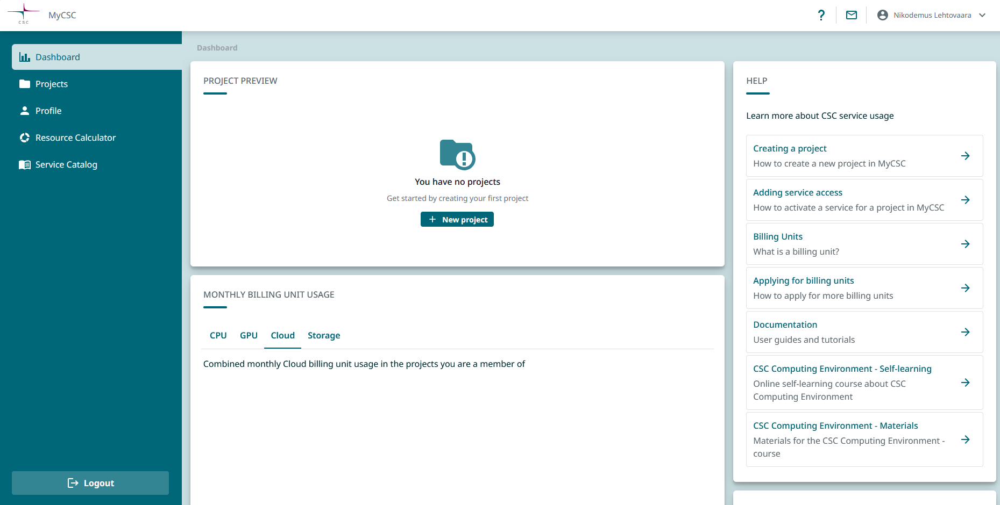
2. Create a project
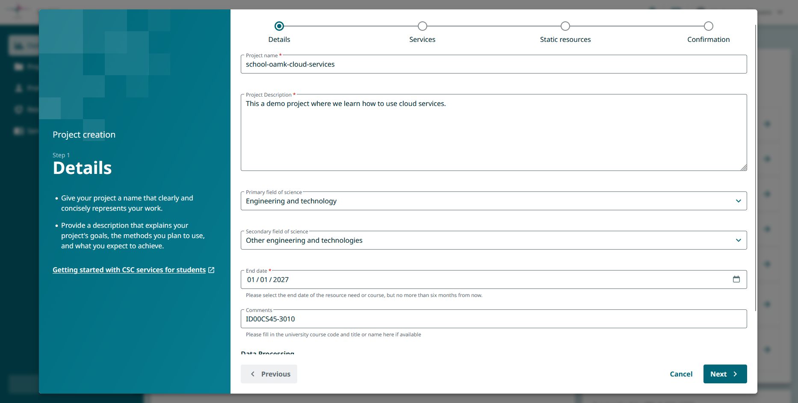
3. Select the Rahti service
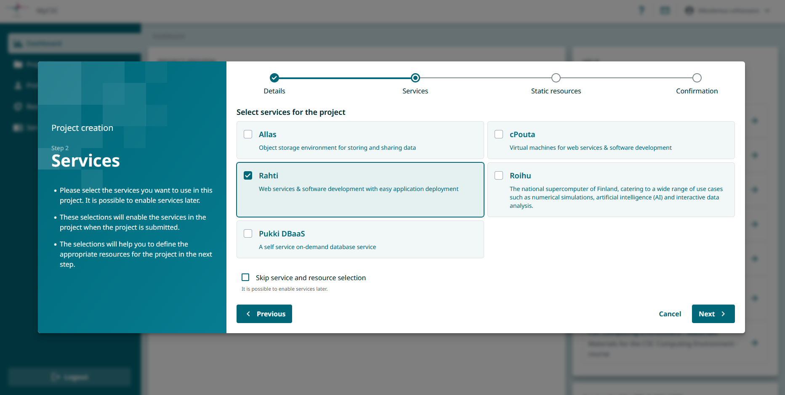
4. Agree to Terms and Conditions.
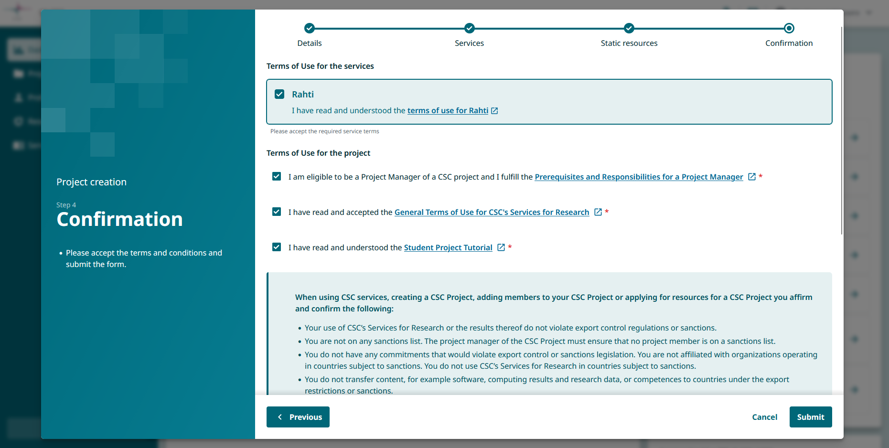
5. Note down the project number
2020662
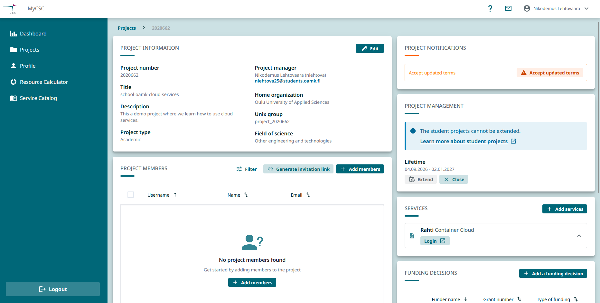
6. After few minutes log on the Rahti console.
https://console.rahti.csc.fi
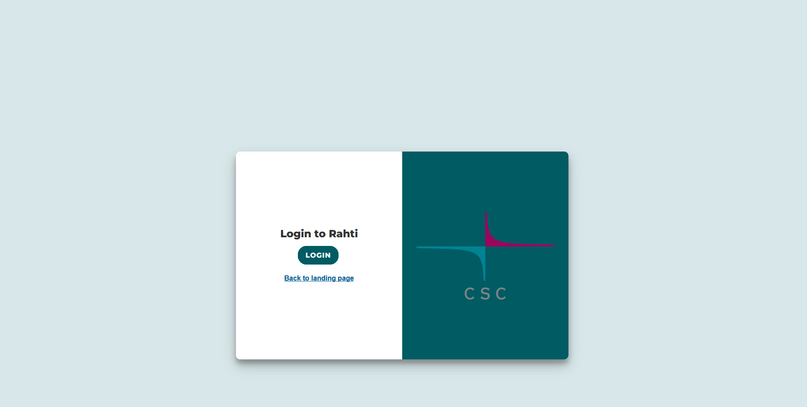
7. Create a new project in Rahti.
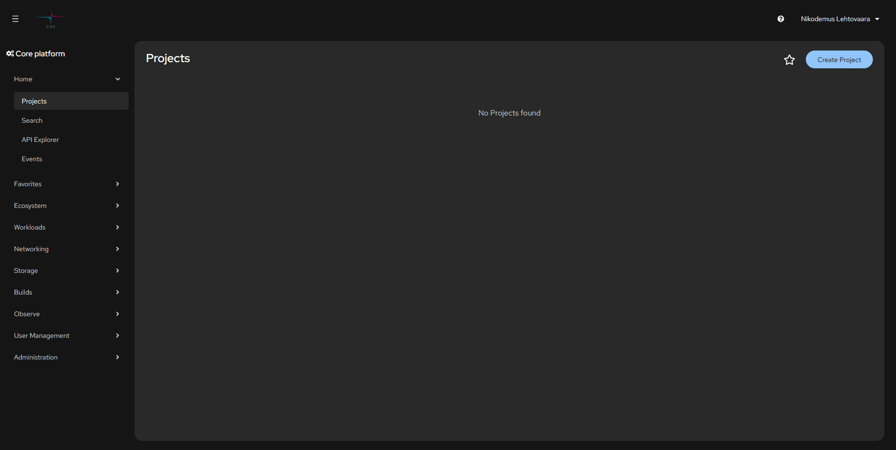
8. Fill the data remember to input the project number from MyCSC.
csc_project: 2020662
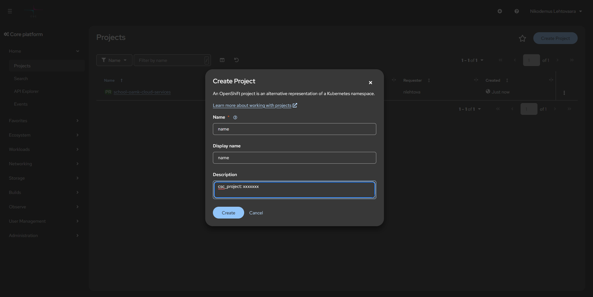
9. Project Created
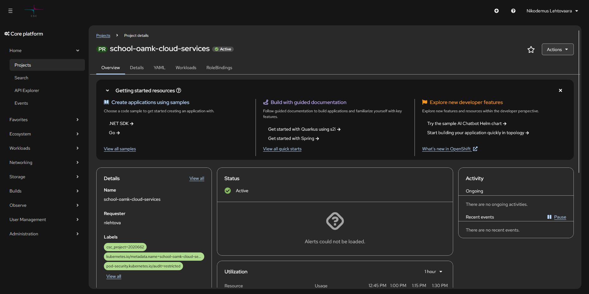
10. Make a github repo for your container
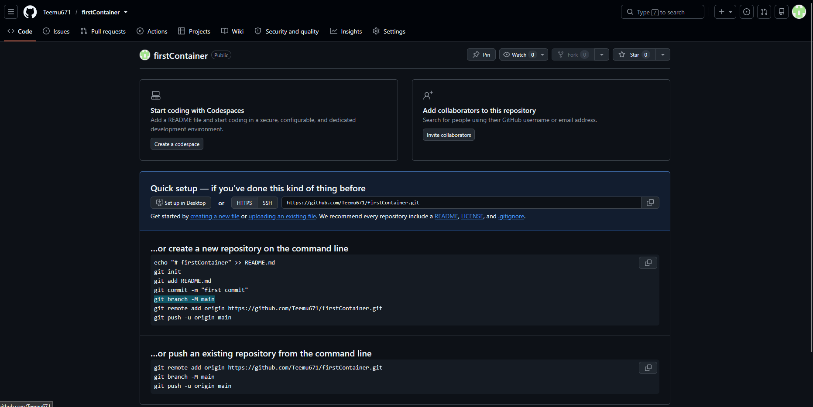
11. Make you first github push
git init
git add index.html Dockerfile
git commit -m "Initial container setup"
git remote add origin https://github.com/your-username/your-repo.git
git push -u origin main
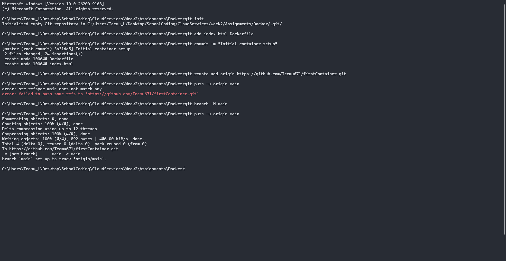
12. Have your dockerfile and index.html for the container
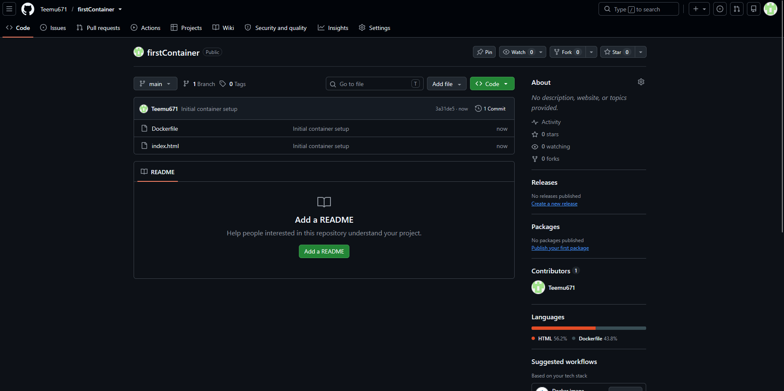
13. Login to oc (OpenShift) on your computer
oc login https://api.2.rahti.csc.fi:6443 --token=
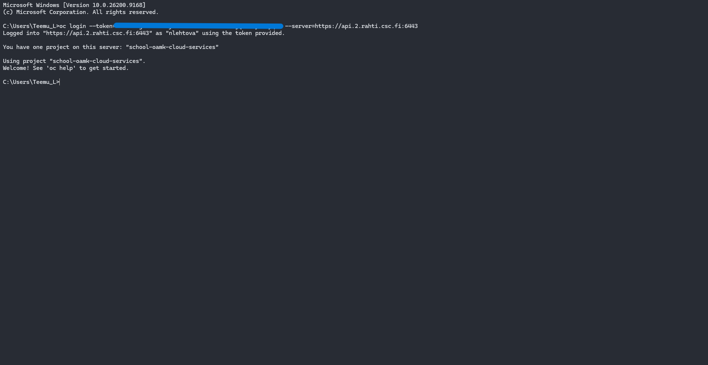
14. Make a new app on Rahti using oc
oc new-app https://github.com/your-username/your-repo.git
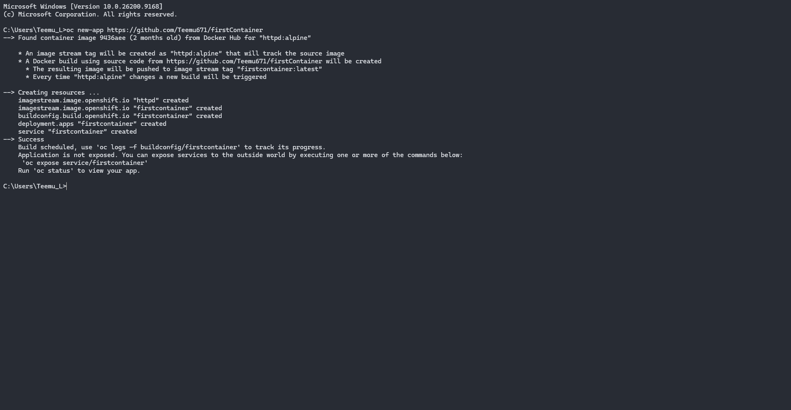
15. Create a route to the public internet
oc create route edge your-repo-name --service=your-repo-name --insecure-policy=Redirect
Do note that your repo name gets changed if it has uppercase letters, they are changed to a lowercase letter.
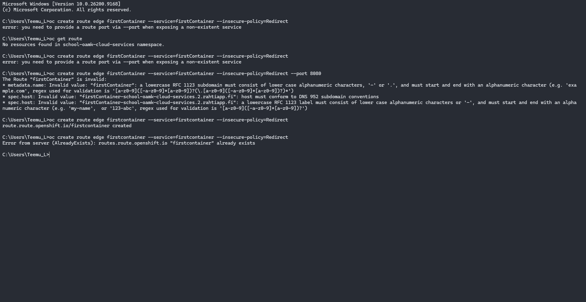
16. Checking the route address
oc get route
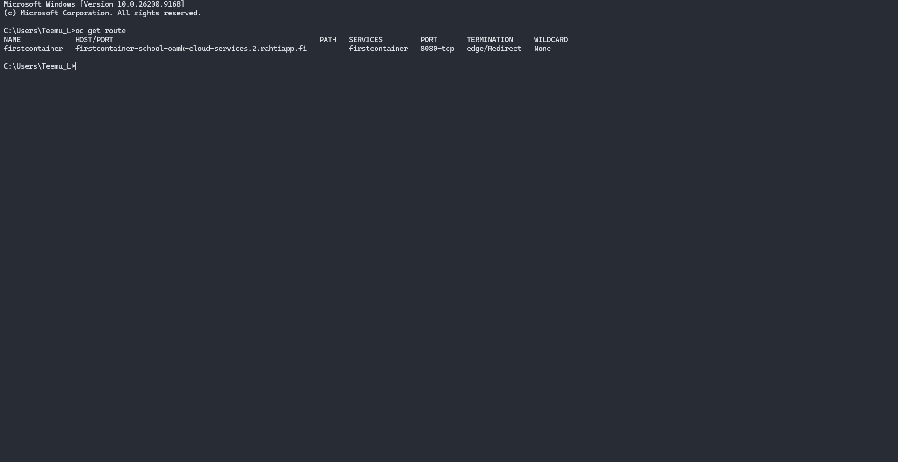
17. Scaling your app
oc scale deployment/ --replicas=3
oc get pods
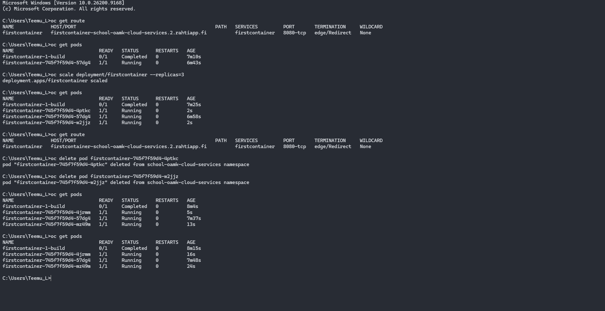
18. You have deployed you Rahti website
https://firstcontainer-school-oamk-cloud-services.2.rahtiapp.fi/
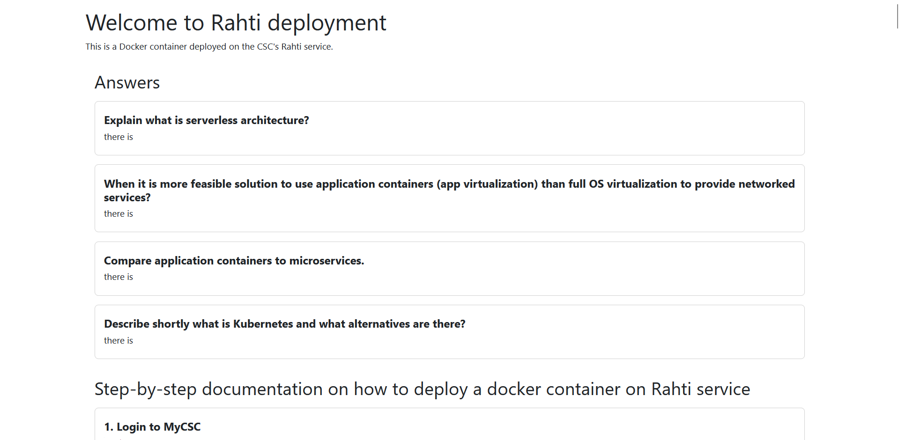